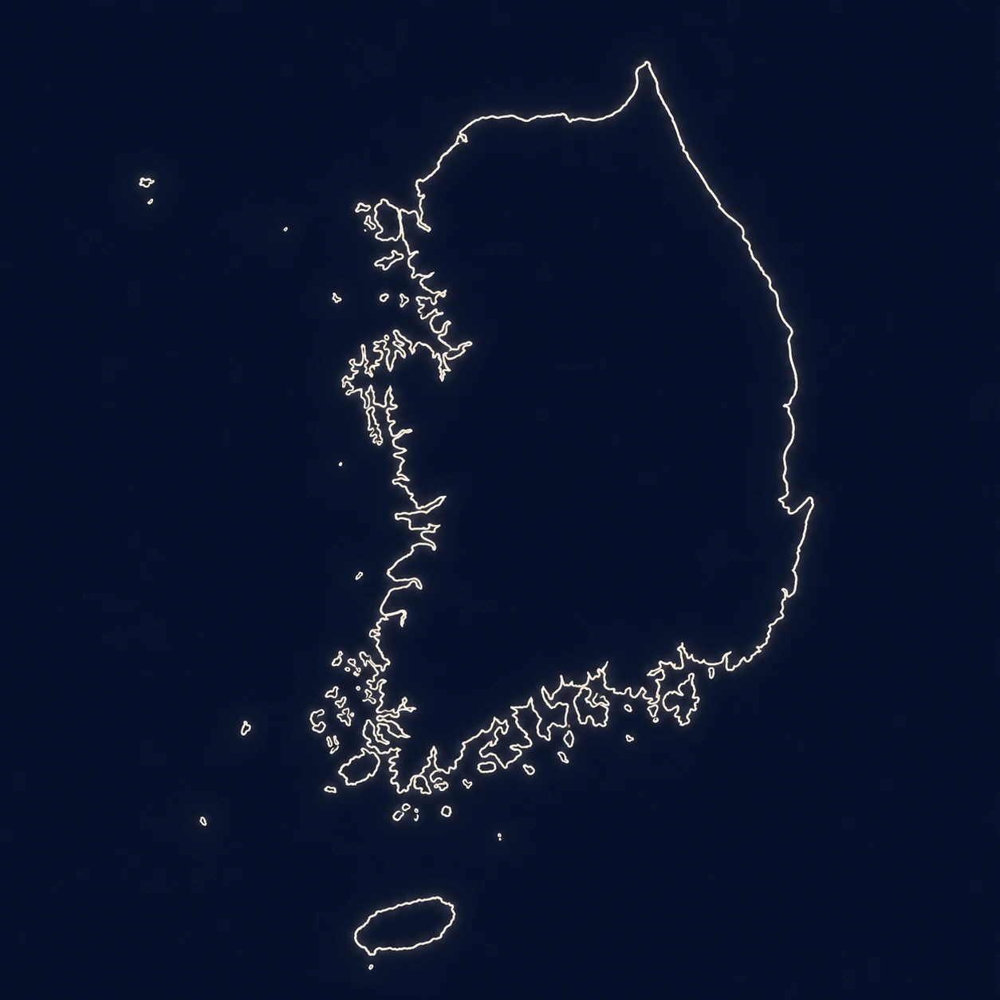
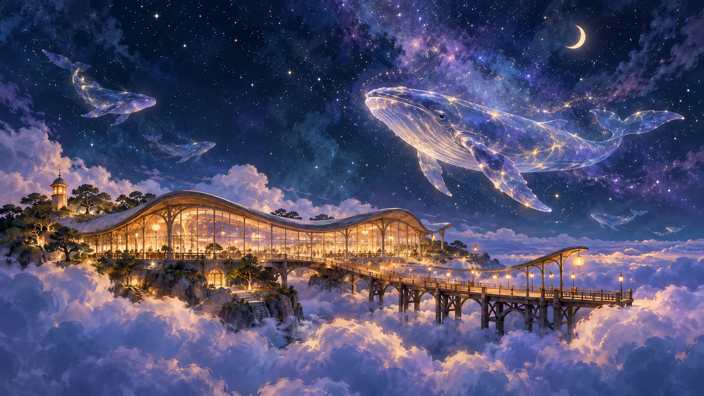

별빛을 따라, 첫 번째 이야기
별빛이 가리키는 곳
대한민국, 서쪽 끝으로

이야기가 시작되는 곳37.46° N · 126.44° E
서해동해제주
구름 너머, 마침내
머물고, 또 떠나는 곳
당신 앞으로 도착한 초대
어때… 관심 있는가?
조금 수줍은 대답은, 살짝 달아날지도.
별빛을 따라, 첫 번째 이야기
별빛이 가리키는 곳


구름 너머, 마침내
머물고, 또 떠나는 곳
당신 앞으로 도착한 초대
어때… 관심 있는가?
조금 수줍은 대답은, 살짝 달아날지도.
하늘고래의 탑승권을 찾아서
동료들과 함께 네 가지 장면을 사진으로 남겨주세요.
카드를 누르면 미션이 펼쳐집니다.
5명 이상이 모여 손가락으로 별을 만들고 사진을 찍어주세요. 다른 팀원들과도 함께해 보세요.
체육행사에서 가장 역동적인 순간을 포착해 사진으로 남겨주세요.
동료들과 몸으로 ‘IAFC’ 네 글자를 만들어 사진을 찍어주세요.
네 팀의 팀장님들이 서로 어깨동무하고 활짝 웃는 사진을 찍어주세요.
우리의 이야기는, 이제부터 시작이라네.